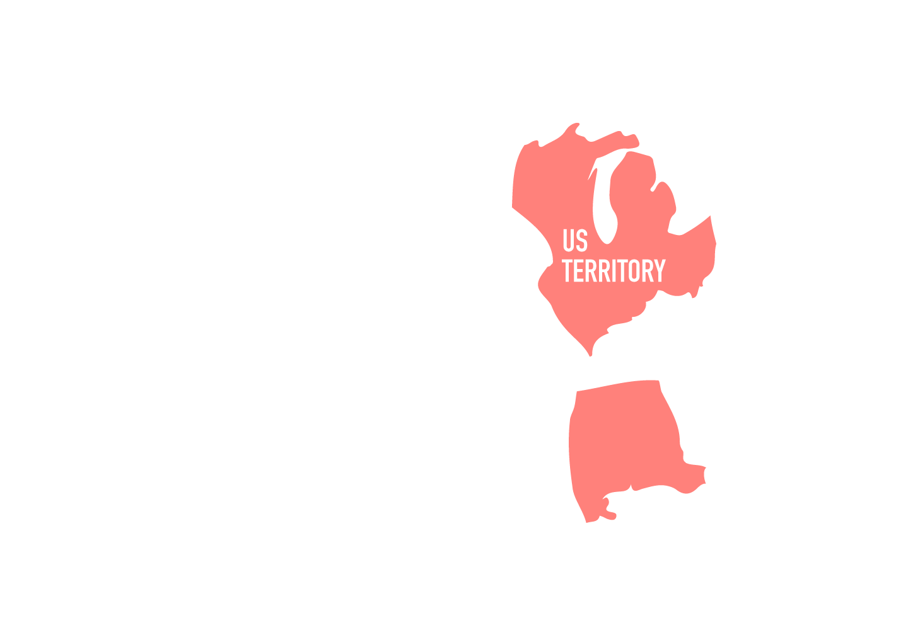
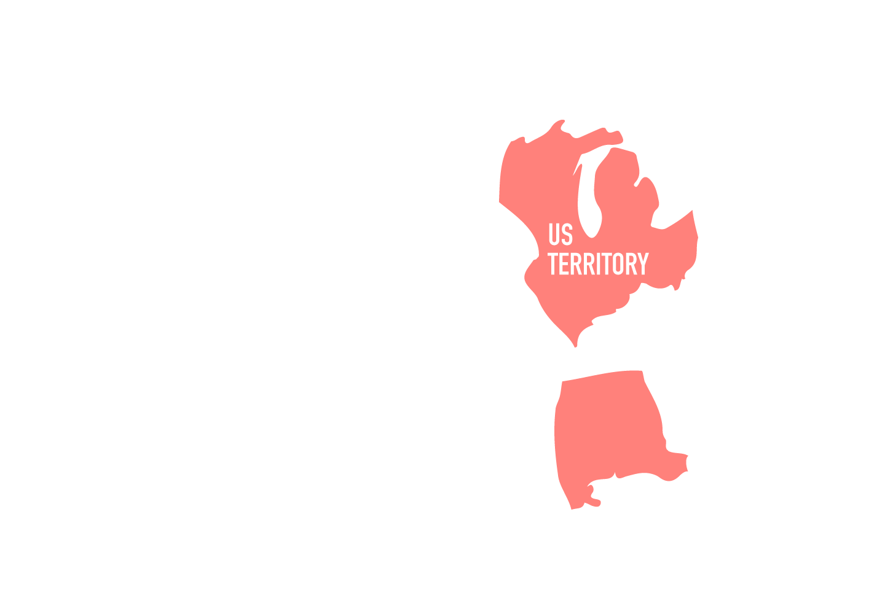

Period 3 includes the events of the French and Indian War and everything up until the start of the new century. This is a pretty hefty unit as it includes the American Revolution and the beginning years of the nation. (AP: This is 12% of your exam so it’s quite important!)
-
Albany Convention
June 19-July 11, 1754
-
French and Indian War
1754-1763
-
Treaty of Paris 1763
February 10, 1763
-
Pontiac's Rebellion
1763-1766
-
Proclamation of 1763
October 7, 1763
-
Revenue Bills
1764-1774
-
Boston Massacre
March 5, 1770
-
Boston Tea Party
December 16, 1773
-
First Continental Congress
September 5-October 26, 1774
-
Second Continental Congress
April 19, 1775
-
Revolutionary War
April 19, 1775-September 3,1783
-
Declaration of Independence
July 4, 1776
-
Articles of Confederation
March 1, 1781
-
Treaty of Paris 1783
September 3, 1783
-
Shays' Rebellion
1786-1787
-
Constitutional Convention
May 25-September 17, 1787
-
Ratification of the Constitution
June 21, 1788
-
Constitution in use
March 4, 1789
-
French Revolution
May 1789-1799
-
Sedition Act
July 1789
-
Creation of the Bank of the United States
February 25, 1791
-
Whiskey Rebellion
1791-1794
-
Haitian Revolution
August 21, 1791-January 1, 1804
-
Battle of Fallen Timbers
August 20, 1794
-
Jay's Treaty
November 19, 1794
-
Treaty of Greenville
August 3, 1795
-
Pinckney's Treaty
October 27, 1795
-
XYZ Affair
1797-1798
-
Alien Act
July 6, 1798
-
Virginia and Kentucky Resolutions
December 24, 1798
Let’s begin with the turning point in the history of the colonies. The conflicts French and Indian War (or the Seven Years’ War) officially began in 1754 and lasted until 1763. Now the war isn’t between the French and the Indians but rather those two groups against Great Britain.
- Great Britain expanded deep into North America (Ohio Valley) and affected the French-Indian trading networks
- Iroquois allied with Britain but other Indian tribes allied with France
In order to fight the French and Indians, the British had to make their way to the colonies and they tried to enlist the help of the colonists.
- Albany Convention (1754)
- 7 out of 13 representatives of the colonies showed up
- Benjamin Franklin planned to unite the colonies against France and created the political cartoon “Join or Die” (with the snake)
The war ended in a victory for Great Britain and the colonists.
- The French were kicked out of North America and lost a trading partner
- The Native Americans were weakened
- Official end of the war came with the Treaty of Paris 1763
After the war, Great Britain’s personality took an 180-degree turn. The war took an economic toll on the country and they intended to gain that money back.
- Great Britain wanted to raise revenue from the colonists
- Ended the salutary neglect the colonies faced for decades
- Colonists expanded into the interior of America, leading to Pontiac’s Rebellion (1763)
- Ottawa chief rebel against British Indian policy in the Northwest Territory
- The Proclamation of 1763 was passed shortly after
- An attempt to stop expansion and regulate the relationship between Natives
- Angered the colonists who were under the impression that they would be rewarded for their services with more land
Now a phrase you might have heard about this time period is “No taxation without representation!” Great Britain passed a series of acts to get colonists to pay taxes and contribute to the debt the war caused. However, the colonists were outraged by the lack of consent and wanted to keep a hold on their economic activities and political rights.
- Sugar Act (1764)
- Taxed sugar and other colonial imports
- Stamp Act (1765)
- Taxed written documents such as newspaper, legal documents, and playing cards
- Declaratory Act (1766)
- Parliament rejected the idea that taxation should rest in the hands of colonial assemblies
- Repealed the Stamp Act
- Townshend Act (1767)
- Taxes on British products
- Repealed in 1770 but kept tax on tea
- Intolerable Acts (1774)
- Series of laws that punished the colonies, especially Massachusetts because of the Boston Tea Party
- Quebec Act
- Granted land to French settlers
- Boston Port Act
- Discontinued shipments and trade in the Boston harbor
The colonists were tired of their treatment by the British. Two major events were essentially the final straw for the colonists.
- Boston Massacre (1770)
- British troops killed 5 men in the town square
- Boston Tea Party (1773)
- Against the British monopoly on tea, the Sons of Liberty disguised themselves as Mohawk Indians and threw tea into the harbor
From then on, the colonists participated in conventions and created documents that supported the idea of individual rights (natural rights philosophy) and reflected ideas of Enlightenment.
- First Continental Congress (1774)
- Met from September to October in Philadelphia, right after Intolerable Acts
- Boycotted goods
- Second Continental Congress (1775)
- Met in May in Philadelphia
- Drafted the Olive Branch Petition and got rejected
- Changed their minds from reconciliation with Britain to independence from them
- Created a continental army and prepared for war
- Declaration of Independence (1776)
- Drafted by Thomas Jefferson
- Included the right to revolution, human rights, and a list of grievances directed towards King George III
- Common Sense (1776)
- Written by Thomas Paine
- A series of essays to raise the morale of colonists and convince them that independence was the way to go
With the Declaration of Independence, the colonies waged war against Great Britain, leading to the Revolutionary War.
- Lexington and Concord (1777)
- “Shot heard round the world”
- First encounter between the British red army and American “minutemen”
- Battle of Saratoga (1777)
- Turning point of the war
- The colonies won the battle and received help from the French and many other countries afterwards
- Battle of Yorktown (1781)
- Last major battle
- Washington won against the British general Cornwallis
Although Great Britain had a superior navy and was considered the top country in the world, the colonists won the war because of greater familiarity with the land, resilient military and political leadership, ideological commitment, and their diplomatic relationships.
- Treaty of Paris (1783)
- Second one that ended the American Revolutionary War
- Secured the colonists’ independence
After winning the war, the thirteen colonies officially became the United States of America. However, in order to truly become a nation, they had to come up with a form of government.
Their time under Great Britain’s monarchy led to fear of kings and strong monarchs. This led to the creation of the Articles of Confederation, a document that emphasized the power of the states.
- Articles of Confederation (1781-1789)
- First constitution, a series of articles that limited the power of the government
- Land Ordinance of 1785
- Sold land in order to pay debt
- Northwest Ordinance of 1787
- Set the requirement to become a US state, 60,000 residents
- Promoted public education and prohibited slavery
Unfortunately, the Articles were not very successful. The limitations put on the federal government prevented them from accomplishing much. The government was unable to collect taxes and regulate commerce. They also could not make amendments to the Articles unless all thirteen states agreed (which wasn’t going to happen).
The states learned the hard way that things needed to be changed.
- Shays’ Rebellion (1786-1787)
- A group of debtor farmers led by Daniel Shays wanted to crush the Massachusetts’ state militia in order to get land
After realizing that the Articles of Confederation failed to create a functioning government, delegates were given permission to make amendments at the Annapolis Convention. However, the delegates agreed to scrap the Articles and start fresh.
- Philadelphia Convention (1787)
- Met from May to September
- Since the Article of Confederation failed, delegates gathered to improve on it but eventually just drafted a new one
- Many important delegates came with one of the main ones being Benjamin Franklin.
- Writer, scientist, inventor, and diplomat
- Negotiated the Treaty of Alliance with France, Treaty of Paris, and attended Constitutional Convention.
Writing the Constitution wasn’t the easiest task as many of the delegates disagreed on a variety of issues. They debated over the issues of slavery, the organization of the government, representation, powers of each branch, and many more. Members of the conference proposed plans to help resolve these issues.
- Virginia Plan
- Proposed by James Madison
- Sets the basic structure of our government
- Bicameral Congress
- Three branches of government
- Representation based on population
- New Jersey Plan
- Proposed by William Patterson
- Equal representation for each state
- Great Compromise
- Proposed by Roger Sherman
- Combined both types of representation into the houses of Congress
- ⅗ Compromise
- Compromise between the Northern and Southern States when deciding the number of representatives based on population
- Slaves were to be counted as ⅗ of a person when determining the population of a state
After the Constitutional Convention, the founders needed the states to ratify the Constitution in order for it to be put in place. However, not everyone agreed with the delegates’ decision to scrap the Articles of Confederation and further centralize the government. From here, two prominent groups formed.
- Federalists
- Wanted a strong central government
- Believed that the Constitution was sufficient in protecting the rights of the people
- Federalist Papers (85 essays)
- Written by John Jay, James Madison, and Alexander Hamilton
- Anti-Federalists
- Wanted strong states’ rights
- Wanted a Bill of Rights to protect the individual rights of the people
The Constitution was finally ratified in 1789, but not without specific sections to limit the power of the federal government from being too powerful.
- Constitution (1789) - drafted by James Madison (“Father of the Constitution”) and basically set the structure of our government today
- Separation of powers
- Three branches of government
- Judiciary Act (1789) - established the Supreme Court and lower federal courts
With the establishment of a new government, the United States now had other issues to tackle, both domestic and international.
Domestic Issues:
- Alexander Hamilton - first secretary of treasury. Established the first national bank: Bank of the United States
- Bank of the US (1791) - Operated as both a commercial bank and fiscal agent for government, developed by Hamilton and its charter lasted 20 years
- Whiskey Rebellion (1794) - Protest by grain farmers in Pennsylvania against federal tax on whiskey
- Washington used force to solve the uprising, use of power/army
- Alien and Sedition Acts (1798) - prevent immigrants from participating in politics and silence
- Residency requirement changed from 5 to 14 years for the Alien Act
- Virginia and Kentucky Resolutions (1798) - Madison and Jefferson in response to Alien and Sedition Acts, encourage states to veto federal legislation
There were also events regarding Native Americans during this period.
- Battle of Fallen Timbers (1794) - Kentucky riflemen defeated Indian tribes and ended Chief Little Turtle's efforts
- Treaty of Greenville (1795) - Treaty with Indians. Basically bought the northwestern land from Indians (Ohio State)
Foreign Affairs
- Proclamation of Neutrality (1793) - Washington proclaimed neutrality and would not support the French Revolution
- Jay’s Treaty (1795) - treaty between U.S and Great Britain that ensure Americans will not interfere the British-French War. ensured 10 years of peaceful trade between the United States and Great Britain
- XYZ Affair (1797) - American envoy, John Marshall, went to France because they were attacking US ships (Jay’s Treaty). However, Marshall was met by 3 anonymous and requested $250,000 bribe to see the French official
- Farewell Address (1796) - Washington warned to not establish long term alliance and political parties, but you know, later presidents didn't listen :(
- Pinckney’s Treaty (1795) - defined boundaries between the US and Spanish colonies
- Granted us navigation rights on the Mississippi River.
The American Revolution paved way and inspired other nations to take a stand and have their own revolutions as well.
- French Revolution 1789-1799 - radical social and political change throughout Europe as Napoleon rise against the French king
- Haitian Revolution (1791) - led by Toussaint L’Ouverture which was a slave. First successful slave rebellion and created independence of Haiti in 1804
- Latin American War of Independence - late 18th and early 19th century that created independence nations
Women also began to play a greater role in society.
- Republican motherhood stressed the importance of women in raising children and teaching republican virtues
- Abigail Adams
- Advocated for women's rights
Bottom Line: Great Britain mistreated the colonists and exerted too much claim over them after the French and Indian War. All the events built up and spilled over into the Revolutionary War.
The Articles of Confederation, the first form of government for the United States, was not sufficient to help the nation run. With Shays’ Rebellion, the founders decided to create a new form of government, leading to the creation of the Constitution.
The United States now begins to navigate through life as a new country, dealing with domestic and international conflicts. Washington famously advises America to not enter into alliances with other nations and refrain from splitting into political parties. As you can probably tell, that didn’t happen.
 
